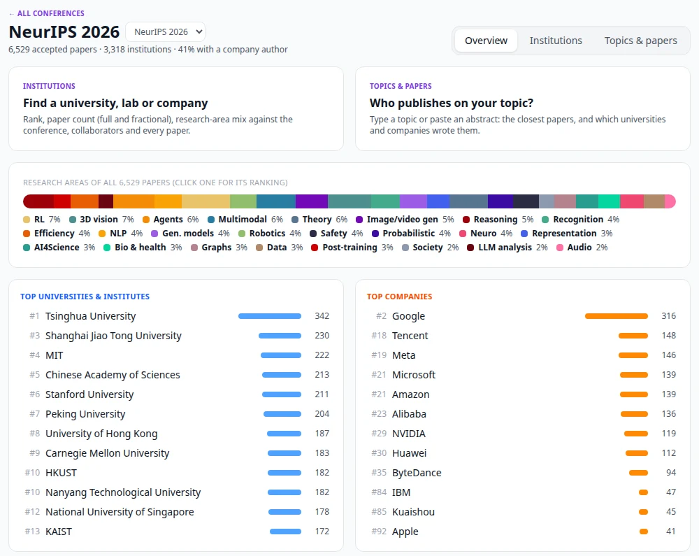

Conference explorer¶
The Conferences tab browses the accepted papers of the major ML, vision, NLP and robotics conferences two ways: by institution (where does a university, lab or company rank, what does it publish on, with whom) and by topic (type a topic or paste an abstract: which universities and companies publish most on it, and which papers are closest). It works for every conference-year in the list below, not one fixed conference, and runs entirely on your own server.

Which conferences¶
| Field | Conferences | Source |
|---|---|---|
| ML | NeurIPS 2020–2026, ICML 2022–2026, ICLR 2022–2026 | official conference site |
| ML | AISTATS, UAI, COLT | Paper Copilot |
| Vision | CVPR 2023–2026, ICCV 2025, ECCV 2024 and 2026 | official conference site |
| Vision | CVPR 2022, ICCV 2021/2023, ECCV 2022, WACV | Paper Copilot |
| NLP | ACL, EMNLP, NAACL, COLM | Paper Copilot |
| General AI | AAAI, IJCAI | Paper Copilot |
| Robotics | CoRL, RSS, ICRA, IROS | Paper Copilot |
| Data | KDD, WWW | Paper Copilot |
Official conference sites. NeurIPS, ICML, ICLR, CVPR, ICCV and ECCV publish every accepted paper as one JSON file, with authors, each author's institution (92–98 % of authors carry one), abstract, decision (poster, spotlight, oral), session and the OpenReview link.
Paper Copilot keeps paper lists for the other venues and older years. Most come with normalised affiliations; a few (ACL 2025, recent OpenReview venues that hide them) do not, and for those the page says the institution views are thin and the topic view is the useful one. Rejected and withdrawn submissions are dropped.
Some sites serve only the first page of their list without a login (CVPR 2026 at the time of writing: 199 of 5,163 papers with authors). The titles of the rest come from the site's public paper list, so topic search still covers the whole conference, and the page says for how many papers institutions are known.
Loading a conference¶
The first time you open a conference that is not loaded, PaperManager downloads its list and indexes it in the background; the page shows the progress and fills in as it goes:
- Downloading the list (a few seconds).
- Reading: institution names are normalised and counted. The institution views work from here on.
- Indexing: every title and abstract is embedded with bge-small-en-v1.5 on the CPU, which gives the research areas and semantic topic search. About two minutes for NeurIPS 2026 (6,500 papers, titles only so far); with abstracts 7–15 minutes (ACL 2025, 3,100 papers: 7 min; NeurIPS 2025, 5,900 papers: 14 min) on four CPU threads.
A default set is loaded when the backend starts (see Settings), so the main conferences are ready without anyone waiting. refresh at the bottom of a conference page downloads it again; this year's conferences are also refreshed automatically every two weeks, since the sites keep adding abstracts, sessions and late papers until the meeting.
Overview¶
Paper count, institution count and the share of papers with at least one company author; the research-area mix of the whole conference (click an area for its institution ranking); the top universities and institutes, and the top companies.
Institutions¶
A ranked table of every institution, searchable by name, filterable by academia / industry and by research area. With an area selected the table ranks by papers in that area and shows what share of each institution's own papers that area is ("of own").
Click a row for the institution card:
- Rank overall and among universities or companies, papers, fractional papers and share of the conference.
- Research areas against the whole conference: the thin bar under the institution's bar is the conference's mix, and areas the institution publishes in at least twice the conference rate are marked ×2.0, ×3.1, ...
- Most frequent co-authoring institutions and the authors with the most papers there.
- Every paper, orals and spotlights first; click an area in the legend to filter.
Topics & papers¶
Type a topic ("RL for LLM reasoning", "diffusion models for protein structure") or paste a whole abstract. The query is embedded with the same model, the closest 50 / 100 / 200 / 500 papers are taken, and the page shows:
- their research-area mix and how many have a company author;
- the universities & institutes and the companies with the most of those papers (hover for what share of the institution's papers at the conference that is);
- the closest papers, each with its match score, area, decision, session and institutions.
Short queries get bge's retrieval instruction ("Represent this sentence for searching relevant passages: ..."); a pasted abstract is embedded as is. Until a conference is indexed, topic search falls back to keyword matching on titles and abstracts and says so.
Short queries go into the URL (/conferences/neurips2026?view=topics&q=video%20generation), so a
result can be shared or bookmarked.
Papers and your library¶
Every paper row shows In library when a paper with the same title is already in your library
(it links to it), and + Library otherwise. Adding creates the paper with its title, abstract,
venue ("NeurIPS 2026"), year and authors (each with their institution as affiliation), tagged
from-conference. Upload the PDF later from the paper page for the full pipeline. Click a title
for the abstract, the author list with institutions and the eight closest papers at the same
conference; ↗ opens the paper on the conference site.
How things are counted¶
- Papers: a paper counts once for every institution with at least one author on it. A paper by MIT and Google counts for both.
- Fractional: each author is 1/n of a paper (n authors), split equally over that author's institutions. Fractional counts sum to the number of papers with affiliations.
- Rank: by papers, ties share a rank.
- Institution names are normalised: HTML entities and full-width letters are cleaned, department names dropped ("Department of Computer Science, ETH Zurich" → ETH Zurich), several affiliations in one field split ("Google, TUM" → Google and TU Munich), and spellings merged. About 220 alias rules merge the common cases: Google with DeepMind, Meta with FAIR, the institutes of the Chinese Academy of Sciences, campus spellings ("University of California, Berkeley", "UC Berkeley"), acronyms (MIT, CMU, KAIST, EPFL). Everything else keeps its own spelling and is merged by case, accents and punctuation.
- Academia / industry: aliases carry it; otherwise a name with "university", "institute", "college", "laboratory", "hospital", ... is academia, anything else a company. Non-profit institutes (Allen Institute for AI, Mila, Max Planck, Shanghai AI Laboratory) count as academia. "Independent researcher" is not counted.
- Research areas are one fixed taxonomy of 24 areas for every conference, so the mix of NeurIPS and ICML can be compared and an area keeps its colour everywhere. Each paper gets the area whose description is closest to its embedding, after both are centred on the conference's mean paper vector; the area centres are then moved halfway towards their papers twice. Areas are a coarse map, not a label: a paper on, say, RL for theorem proving lands in one area only.
A wrong institution mapping is fixed by an alias line in
backend/services/conferences/institutions.py.
From Claude (MCP)¶
Three MCP tools expose the same data to Claude Desktop and Claude Code:
| Tool | Answers |
|---|---|
list_conferences |
Which conference-years are loaded, with paper and institution counts |
conference_topic |
Who publishes on a topic at a conference: top universities and companies, area mix, closest papers |
conference_institution |
What one institution published at a conference: rank, counts, area mix against the conference, collaborators, authors, papers |
conference takes a key (neurips2026), a name (ICML 2025) or a bare series (iclr = its
latest year). Papers already in your library come back with their library_paper_id.
Settings¶
All optional; set them in .env and pass them to the backend in docker-compose.yml.
| Variable | Default | What it does |
|---|---|---|
CONFERENCES_AUTO |
true |
Load the default conferences at startup |
CONFERENCES_DEFAULT |
neurips2026,icml2026,iclr2026,cvpr2026,iccv2025,eccv2026,neurips2025,acl2025 |
Which ones |
CONFERENCES_REFRESH_DAYS |
14 |
Reload this year's default conferences when older than this |
CONFERENCE_DATA_DIR |
/data/conferences |
Where datasets and the model live (the backend's volume) |
CONFERENCE_EMBED_THREADS |
4 |
CPU threads for embedding |
Each conference takes 5–30 MB on disk (papers, institutions, float16 embeddings); the model takes 130 MB once. No API key is involved and nothing is sent anywhere except the download of the paper lists and, once, the model.